|
Les
Armes de HL²
Voici une petite colection
des armes qui seront présentent dans Half Life 2. Mais rassurez-vous,
il y en aura beaucoups plus dans la version finale !
| 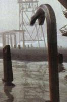 |
Pied de Biche
Comment aurions nous pu nous passer du légendaire
Pied de Biche, véritable symbole !
Il s'agit de l'arme standard
de Gordon Freeman, son utilisation est bien sûr assez limitée |
Pistolet
A première vue, il s'agirait d'un H&K USP Match.
La même arme qu'utilise Angelina Jolie dans Tomb Raider.
Son chargeur est constitué de 12 cartouches de .45; sa puissance de
feu et sa précision sont très importantes. |
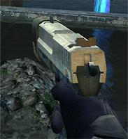 |
| 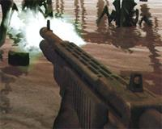 |
Fusil à Pompe
Le fusil à pompe est lui aussi de retour ! Sa puissance
de feu en fait une arme mortelle à courte portée,
mais il est quasiment inutil à moyenne et longue distance.
Celui-ci ressemble au Shotgun italien SPAS-12. |
H&K MP5K
Le MP5 est une arme extrémement connue; l'arme est d'ailleurs
présente dans la quasi-totalité des jeux vidéos.
Le MP5K est le petit frère de l'arme légendaire. Seulement d'après
certaines sources, le MP5k n'est là que par erreur; Valve avait en effet
débuté le développement du jeu en pensant au MP5k, mais
il a plus tard été décidé que ce serait le MP7-PDW.
Les models n'ayant pas été encore modifiés, le MP5k est
encore présent dans les screenshots et les vidéos. |
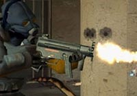 |
| 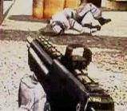 |
MP7 - PDW
Il n'y a à vrai dire aucune confirmation à propos
de cette arme utilisée par Gordon Freeman dans la vidéo
de présentation à l'E3. L'arme est dotée
d'une lunnette de visée.
Valve a bien précisé qu'il ne s'agissait pas d'un MP5; certaines
personnes pensent à un MP7 -PDW. |
M-29
Ce fusil semble basé sur le M-29 OICW (Objective Individual
Combat Weapon). Mais cela peut très bien n'être
qu'une coïncidence, ou une version plus futuriste de l'arme.
Le M-29 est constitué de deux canons, le premier tire des balles en
titane de 20mm et le second des cartouches normales de 5.56. Il est équipé d'une
lunette 6X, caméra, visée laser, et vision nucturne.
Inutile de dire que ce fusil est une véritable machine à tuer. |
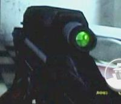 |
| 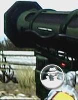 |
Lance roquette RPG
Il s'agit du même RPG présent dans la première
version de Half Life. Visée laser; guidage automatique;
il semble cependant légérement amélioré par
rapport à HL1. |
Lance Grenade
Nous ne sommes pas certain de cette arme. Nous
pensons qu'il s'agissent effectivement d'un lance grenade;
mais d'autres annoncent que cette arme est en fait un fusil
laser. |
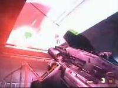 |
| 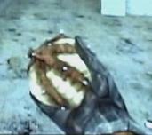 |
Spore Alien
Dévoilée dans la vidéo de l'E3, cette arme
est tout à fait particuliére; puisqu'elle n'attaque
pas directement. Il s'agit de spore qui dégage une sorte
de phéromones lorsque l'on la lance à terre, ce
qui attire quelques créatures alien alliées. Il
suffit de lancer un nouveau spore vers une cible à atteindre,
et ces aliens s'y rendront aveuglement en attaquant tout ce qui
se trouve sur leur passage.
|
Grenade à fragmentation
Il est certainement inutil de présenter cette grenade
: Vous lancez, elle explose en imposant de lourds dégats à tout
ce qui se trouve dans les alentours.
Une chose que peu de monde à remarqué dans les vidéos
de l'E3 : la grenade est simplement lachée, et elle roule ! |
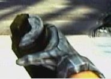 |
| 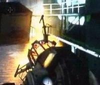 |
Arme "anti-gravité"
Il n'y a aucun nom connu pour cette arme qui, bien sur, ne provient
que de l'esprit des développeurs du jeu (encore une arme
incroyable créée par un vieu scientifique enfermé dans
son labo).
Cette arme permet de tenir à distance des objets, décrocher des
objets dues murs (radiateur, etc..) et le tir secondaire permet de les projetter
au loin. Tous les objets de taille moyenne se trouvant dans le jeu pourront être
manipuler par cette arme.
Il sera de même possible de lever certains ennemis (crabes) dans les
airs et les écraser contre les murs. |
Canon Gauss
Cette arme était visible dans la vidéo de l'E3;
il s'agit en fait de l'armement d'un buggy que Gordon conduit.
Tout en conduisant, il suffit de regarder dans la direction de la cible et
de tirer pour l'atteindre.
Nous savons de même que ce buggy n'est pas le seul véhicule que
Gordon pourra emprunter. |
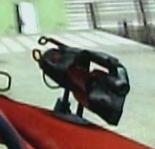 |
Les images sont Copyright Vossey©
|
 |